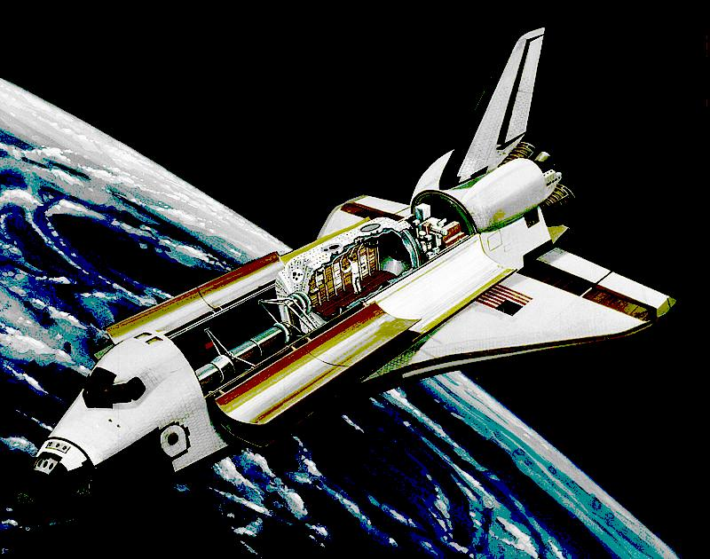

The "space station" concept can be regarded as a pretty good one in the history of space exploration. Having a permanent human habitat in orbit for extended stays allows for scientific missions which would not be possible by simply launching experiments aboard a Soyuz, Shenzhou or Dragon. Such spacecraft instead take the role of a shuttlecraft more than a science vessel on their own. This is not a bad thing by itself, in fact it is a really good thing, because it saves space agencies from the trouble of financing, designing, manufacturing and launching a new laboratory module with every human space crew. Instead, you perform a straightforward crewed launch to a space station to carry out the experiments.

But doing these science missions the harder way has also been considered. One of the best examples of this is the Spacelab, which was a laboratory module that could be installed into the payload bay of a Space Shuttle orbiter (Spacelab was developed by ESA however, not NASA). The astronauts could, once in orbit, access the lab by going through a tunnel between the shuttle crew deck and the lab itself.
Space Shuttle could remain in orbit usually not longer than a couple of weeks, but that was still enough time for some missions and the cargo volume capabilities of the Space Shuttle made Spacelab missions possible. But what if I told you that people also thought about attaching extended habitats and laboratories to space capsules? Meet Big Gemini and TKS, they are like single module space stations!
arda-guler, 2021 - 2023. All Rights Reserved.